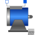
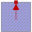

PartialBasicDCMachinePartial model for DC machine |

|
Diagram
{kind=link}
Information
This information is part of the Modelica Standard Library maintained by the Modelica Association.
Partial model for DC machine models.Parameters (17)
| Jr |
Value: Type: Inertia (kg·m²) Description: Rotor's moment of inertia |
|---|---|
| useSupport |
Value: false Type: Boolean Description: Enable / disable (=fixed stator) support |
| Js |
Value: Jr Type: Inertia (kg·m²) Description: Stator's moment of inertia |
| useThermalPort |
Value: false Type: Boolean Description: Enable / disable (=fixed temperatures) thermal port |
| frictionParameters |
Value: Type: FrictionParameters Description: Friction loss parameter record |
| TaOperational |
Value: Type: Temperature (K) Description: Operational armature temperature |
| VaNominal |
Value: Type: Voltage (V) Description: Nominal armature voltage |
| IaNominal |
Value: Type: Current (A) Description: Nominal armature current (>0..Motor, <0..Generator) |
| wNominal |
Value: Type: AngularVelocity (rad/s) Description: Nominal speed |
| TaNominal |
Value: Type: Temperature (K) Description: Nominal armature temperature |
| Ra |
Value: Type: Resistance (Ω) Description: Armature resistance at TRef |
| TaRef |
Value: Type: Temperature (K) Description: Reference temperature of armature resistance |
| alpha20a |
Value: Type: LinearTemperatureCoefficient20 (¹/K) Description: Temperature coefficient of armature resistance |
| La |
Value: Type: Inductance (H) Description: Armature inductance |
| coreParameters |
Value: Type: CoreParameters Description: Armature core loss parameter record |
| strayLoadParameters |
Value: Type: StrayLoadParameters Description: Stray load loss parameter record |
| brushParameters |
Value: Type: BrushParameters Description: Brush loss parameter record |
Outputs (7)
| phiMechanical |
Default Value: flange.phi - internalSupport.phi Type: Angle (rad) Description: Mechanical angle of rotor against stator |
|---|---|
| wMechanical |
Default Value: der(phiMechanical) Type: AngularVelocity (rad/s) Description: Mechanical angular velocity of rotor against stator |
| tauElectrical |
Default Value: inertiaRotor.flange_a.tau Type: Torque (N·m) Description: Electromagnetic torque |
| tauShaft |
Default Value: -flange.tau Type: Torque (N·m) Description: Shaft torque |
| powerBalance |
Type: PartialPowerBalanceDCMachines Description: Power balance |
| va |
Default Value: pin_ap.v - pin_an.v Type: Voltage (V) Description: Armature voltage |
| ia |
Default Value: pin_ap.i Type: Current (A) Description: Armature current |
Connectors (5)
| flange |
Type: Flange_a Description: Shaft |
|
|---|---|---|
| support |
Type: Flange_a Description: Support at which the reaction torque is acting |
|
| pin_ap |
Type: PositivePin Description: Positive armature pin |
|
| pin_an |
Type: NegativePin Description: Negative armature pin |
|
| thermalPort |
Components (15)
| frictionParameters |
Type: FrictionParameters Description: Friction loss parameter record |
|
|---|---|---|
| inertiaRotor |
Type: Inertia |
|
| inertiaStator |
Type: Inertia |
|
| fixed |
Type: Fixed |
|
| friction |
Type: Friction |
|
| coreParameters |
Type: CoreParameters Description: Armature core loss parameter record |
|
| strayLoadParameters |
Type: StrayLoadParameters Description: Stray load loss parameter record |
|
| brushParameters |
Type: BrushParameters Description: Brush loss parameter record |
|
| powerBalance |
Type: PartialPowerBalanceDCMachines Description: Power balance |
|
| ra |
Type: Resistor |
|
| la |
Type: InductorDC |
|
| brush |
Type: Brush |
|
| core |
Type: Core |
|
| strayLoad |
Type: StrayLoad |
|
|  | thermalAmbient |
Extended by (3)
|
Modelica.Electrical.Machines.BasicMachines.DCMachines
Series excited linear DC machine |
|
|
Modelica.Electrical.Machines.BasicMachines.DCMachines
Electrical shunt/separate excited linear DC machine |
|
|
Modelica.Electrical.Machines.BasicMachines.DCMachines
Permanent magnet DC machine |